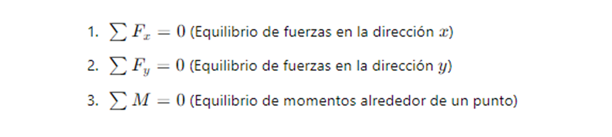
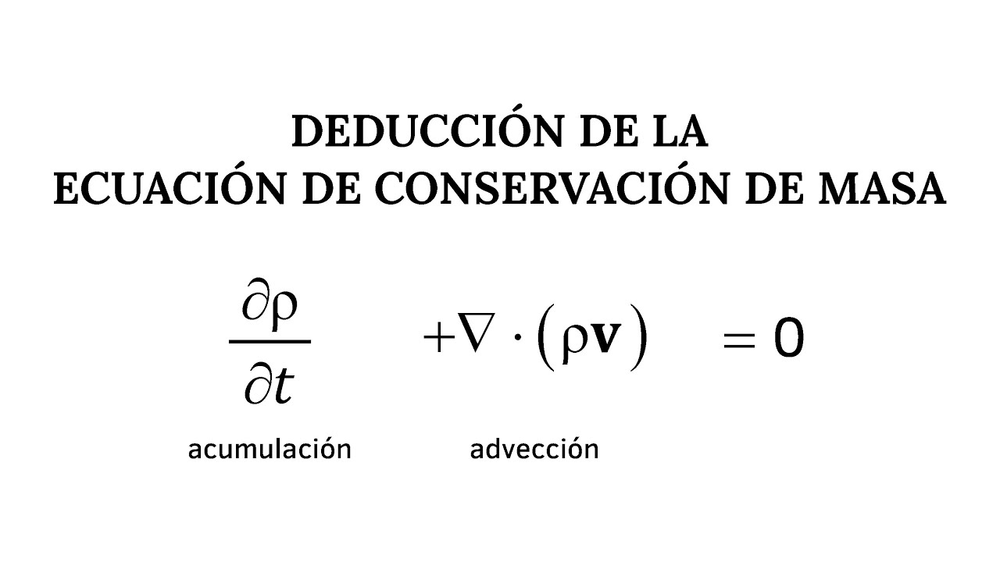

Pilares que permiten diseñar soluciones eficientes, seguras y sostenibles en cualquier campo de la ingeniería.
Ver VariablesTe explico paso a paso cómo funcionan las leyes de conservación y cómo se aplican en ingeniería, con ejemplos prácticos.
Aparte de la segunda ley de Newton, existen otros principios importantes en ingeniería. Entre los más importantes están las leyes de conservación.
Estas son fundamentales en una gran variedad de complicados y poderosos modelos matemáticos, pero conceptualmente son fáciles de entender.
Se pueden reducir a la fórmula:
Cambio = incremento – decremento
(1.13)
Este es precisamente el formato que empleamos al usar la segunda ley de Newton para desarrollar un equilibrio de fuerzas en la caída del paracaidista [ecuación (1.8)]. Pese a su sencillez, la ecuación (1.13) representa una de las maneras fundamentales en que las leyes de conservación se emplean en ingeniería: predecir cambios con respecto al tiempo. A esta ecuación le llamaremos cálculo de variable-tiempo (o transitorio).
Además de predecir cambios, las leyes de conservación se aplican también en casos en los que no existe cambio. Si el cambio es cero:
Cambio = 0 = incremento – decremento
o bien:
Incremento = decremento
(1.14)
En este caso, el incremento y decremento deben estar en equilibrio. A esto se le llama cálculo en estado estacionario y tiene diversas aplicaciones en ingeniería.
Mas abajo encontraras mas informacion de este concepto pues es importante entenderloEl incremento y el decremento también se le da una denominación especial, tiene diversas aplicaciones en ingeniería. Por ejemplo, para el flujo de un fluido incompresible en estado estacionario a través de tuberías:
Este balance asegura que todo esté en equilibrio, aplicando la ley de conservación de masa.
Para la caída del paracaidista, las condiciones del estado estacionario se cumplen cuando la fuerza total es igual a cero, o sea, dv/dt = 0 en la ecuación (1.8):
mg = cv
(1.15)
Esto significa que las fuerzas hacia abajo (gravedad) y hacia arriba (resistencia del aire) están equilibradas, y podemos calcular la velocidad terminal como:
v = mg / c
Las ecuaciones (1.13) y (1.14), aunque simples, representan las dos maneras fundamentales de aplicar las leyes de conservación en ingeniería. Estas se usan para modelar problemas reales en diferentes ramas:
Estas aplicaciones nos muestran cómo los métodos numéricos y las técnicas matemáticas se integran a la práctica de ingeniería para resolver problemas del mundo real.
Estas variables son fundamentales para entender cómo se conservan las propiedades físicas en los sistemas
En este ejemplo se toma como referencia un paracaidista en caída libre. Este caso nos ayuda a entender cómo se aplican las leyes de conservación, ya que intervienen parámetros constantes como la gravedad y la masa, junto con factores de resistencia como el coeficiente de arrastre. En un contexto real, estas variables reflejan el comportamiento del sistema: la masa (m) define al cuerpo, la gravedad (g) es la fuerza que lo atrae, el coeficiente de arrastre (c) representa la resistencia del aire, mientras que la velocidad (v) y su cambio en el tiempo (dv/dt) muestran cómo evoluciona el movimiento. Así podemos ver cómo, incluso en una situación cotidiana como un paracaidista descendiendo, las leyes físicas permiten modelar y explicar el fenómeno.
Tipo: Constante física del cuerpo
Unidad: Kilogramos (kg)
Clasificación: Parámetro del sistema
Tipo: Constante física universal
Valor: ≈ 9.81 m/s²
Clasificación: Parámetro ambiental
Tipo: Constante experimental del sistema
Clasificación: Parámetro de resistencia
Tipo: Variable dependiente
Unidad: m/s
Clasificación: Estado dinámico del sistema
Tipo: Variable dependiente (aceleración)
Unidad: m/s²
Clasificación: Cambio transitorio del sistema
Observa la expresión (imagen). Puedes evaluar por carta o todas a la vez. Usa palabras clave: mecanica, quimica, electrica, civil (acentos no son necesarios).